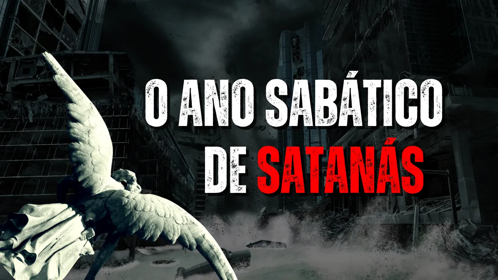

O Sétimo Milênio e a Prisão de Satanás
Introdução
O capítulo 41 da obra clássica de Ellen G. White, "O Grande Conflito", intitulado "Desolação da Terra", descreve o cenário solene que se segue à segunda vinda de Cristo. O texto detalha as consequências do juízo divino, o destino dos ímpios e o exílio de Satanás, estabelecendo um marco final para a história do pecado.
1. O Juízo sobre Babilônia e a Queda dos Poderosos
O capítulo inicia com a queda das estruturas de poder. Aqueles que se enriqueceram através da injustiça e da violação da lei de Deus enfrentam o "dia da ira". Há um foco especial no terrível despertar dos ricos que, durante o tempo da graça, foram cegados pelo engano. Em um instante, suas riquezas são varridas e seus ídolos terrestres são destruídos, revelando o fracasso de uma vida dedicada apenas ao material.
2. O Desespero dos Falsos Pastores
Um dos pontos mais dramáticos é a condenação dos líderes religiosos que sacrificaram a verdade pelo favor dos homens. Ao perceberem que foram iludidos, os fiéis voltam-se com furor contra seus antigos guias. A obra de destruição começa justamente por aqueles que professavam ser os guardas espirituais do povo, os "falsos atalaias".
3. A Terra como um Abismo Caótico
Com a destruição dos ímpios pelo resplendor da glória de Cristo, a Terra é deixada em total desolação. Ela retorna ao estado de "Abismo" — sem forma, vazia e envolta em trevas, como no princípio da criação. O cenário é de caos: cidades em ruínas, árvores desarraigadas e montanhas separadas de suas bases.
4. O Exílio de Satanás: O Bode Emissário
Fazendo eco ao ritual do Dia da Expiação no santuário israelita, todos os pecados do povo de Deus são postos sobre Satanás, o verdadeiro culpado.
A Prisão de Circunstâncias: Ele é "amarrado" por mil anos. Essa corrente não é física, mas sim a ausência de seres humanos para tentar. Restrito a uma Terra desolada, ele é forçado a confrontar os resultados de sua rebelião.
5. O Julgamento do Milênio
Enquanto Satanás está exilado na Terra, os remidos reinam com Cristo no céu. Durante este período, ocorre o julgamento dos ímpios e dos anjos caídos. Os santos analisam os livros de registro e decidem a punição de cada caso segundo as ações praticadas, registrando-a no "livro da morte".
6. O Sábado da Terra: O Fim dos Seis Mil Anos
Um ponto teológico crucial no texto é a ênfase no fim do ciclo de seis mil anos de pecado.
O Descanso Compulsório: Assim como o homem trabalha seis dias e descansa no sétimo, a história do pecado é apresentada como um ciclo de seis mil anos de "trabalho" maligno de Satanás. Com o início do sétimo milênio, o trabalho de destruição do inimigo cessa e a Terra finalmente "descansa" de sua carga de maldição.
O Fim da Opressão: Satanás é despojado de seu poder e entregue à reflexão. Para o povo de Deus, esse cativeiro de Satanás traz alegria, pois marca o fim da dura servidão e da influência do opressor que por tanto tempo fez estremecer as nações.
Conclusão
O capítulo 41 encerra o ciclo de rebelião terrestre com a Terra em um repouso forçado e solene. É o "Sábado" de uma criação moribunda, aguardando a purificação final que ocorrerá após o milênio, quando o conflito será definitivamente encerrado.
Se quiser saber mais veja o vídeo:

Caso queira estudar comigo, entre em contato!
👉 ...
- Essencialista